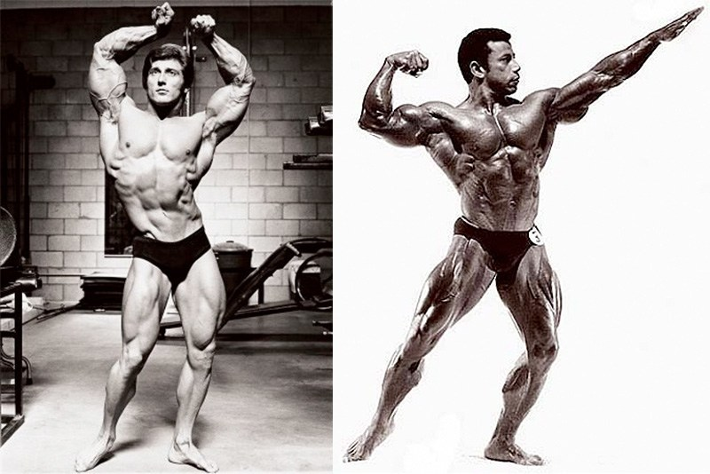
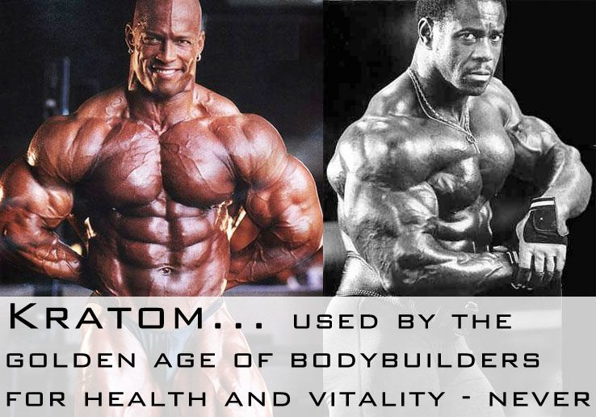

< < < Back
The Ultimate Guide To Muscle: Supplementation – Return Of Kings
If you are new to this series, be sure to check out Part 1 on Genetics and Training and Part 2 on Nutrition.
You should also note the order of these parts.
#1: Knowing your body (genetics) and how to maximize its potential (training).
#2: Solid, natural food first. A high quality and healthy nutrition plan.
Supplementation for building muscle only comes AFTER you have a solid training program and a high quality, protein rich diet of real food.
David Del Jefe wrote a great article on why most supplements are a waste of money. Note that the title declares most, not all, supplements are a waste of money. In my experience, you cannot continue to build muscle naturally, fast, without a few vital supplements.
Whey Protein
After you have a solid plan for five high quality protein meals a day, the first supplement you must add to your diet is a high quality protein powder.
There is simply no way to get enough protein from natural food unless you literally eat 7 times a day like The Rock did when filming Hercules. And even The Rock supplemented with a protein drink around his workout. He was also taking in over 400 grams of protein a day and can afford to eat that much high quality food. You and I are not The Rock, so we need to supplement with protein powder.
The key with protein supplementation is, just like muscle fiber types, the type and the timing. Here are my three liquid whey protein guidelines.
1. A high calorie protein weight gainer BEFORE your workout (30 min to 1 hr).
I might change this in the future after watching Jeff Cavaliere’s video on how much weight gainers suck (always learning, never an expert), but for me, the extra calories that come from higher carbs in this protein drink give me extra energy in the gym that fuels my work out.
The high calorie/carb count of weight gainers only sucks if you are slinging back 500 to 1000 extra liquid calories on your non-training days. That is when you “bulk” and get fat. Weight gainer indeed, but not the kind of weight you want!
I think the rant Jeff goes on against weight gainers is about the cheap, cheap COSTCO, WAL-MART tub style of protein weight gainer. The stuff you find at a grocery store, not a specialty sports nutrition store. If you are paying $30 to $40 for a 6 or 10 lb tub of “high quality protein” that will “pack on the mass”… it ain’t. It’s horseshit.
What you want to look for is a weight gainer that combines everything you need in one protein mix – staged protein delivery, glutamine, creatine, BCAAs and a specifically formulated carb matrix that takes advantiage of your body’s natural responses to training. And it won’t be cheap. You are probably looking at $60 min to $80 to $100 plus for a 5 or 6 lb container. Really look at the ingredients closely. Choose one that clearly breaks down how they create their carb matrix, what they use for taste, how they approach the other supplements (BCAAs etc) in their product.

2. A whey protein isolate immediately, within 30 minutes, after your workout.
I have been downing whey isolate right there in the gym immediately after my very last set for the first time and it is having an amazing effect on my recovery and gains. Isolate protein is the fastest absorbing and highest bio-available protein you can have right after a workout. It helps to halt the catabolic process of muscle tissue breakdown right then and there. If you are still getting DOMS – delayed onset muscle soreness – after your workouts despite adequate nutrition intake, downing an isolate protein drink immediately after your workout will probably eliminate this.
There is also something to be said for a little sugar water and isolate sipped during your workout. It helps to stave off dehydration, but also the instant and immediate demands for energy. With just a little added sugar for energy while pushing weight, your body is less likely to turn to protein breakdown that is the catabolic process to sustain your energy instead.
I had a chance run-in with a kung fu artist in life and we got to talking about hydration during hard training. He avoids the corporate solution – Gatorade and Powerade. He told me that a 50/50 mix of water and pure grape juice (not white) will deliver a far better balance of hydration with sugar and other nutrients the body needs sweating up a tsunami in the gym or on the field. Add a little whey isolate to the mix and you have the perfect hydration solution for those “leave it all on the floor” days in the gym.
3. An optional sustained release, low calorie/carb protein mix on off days.
This has come with experience and intuition over 20 years. I no longer take an off-day liquid protein supplement all by itself (i.e. to add an additional meal to my diet that should be real food, not a supplement). But, I don’t avoid them like the plague either. If I take in any additional liquid protein on my off-days, they are primarily:
- whey isolates first thing in the morning when my muscles are starved from fasting overnight
- as an added supplement to a real food meal, with the meal, never as a meal replacement
- never a full serving, only 1/2 or so.
This approach to powdered liquid protein supplementation has helped me get muscle gains faster while also saving money and staying lean.
You will also notice I focus my liquid protein supplementation around my workout – all within the first 8 to 12 hours. After that, I scale back considerably, especially on rest days and breaks from training. (By break, I mean I am not serious about mass. I still train, but not as hard and rely primarily on real food to get my protein.) As you get used to this, your body will begin to tell you when you need some quick liquid protein because your muscles are demanding it, and the times when solid food will be enough until your next meal.
With this approach to protein, you now have a method and goal for having a liquid protein drink in your diet.
It is not just to have one because you are supposed to or, worst mistake of all, as a complete replacement of what should be a real food meal. This intuitive approach to protein supplementation can only be gained with experience and by being very attuned to how your body is feeling during recovery days. Trust me, once you get a feel for it, your gains will be massive, you will be leaner and you will save money.

Branch Chain Amino Acids
A must for muscle protein synthesis post workout. If you have them in your protein supplement, you probably don’t need to spend money on these. If not, get some.
Glutamine
This is another supplement that you can skip if you can find it included in your protein drink. This stuff is primarily for joint repair and immune system support. It helps keep your body in good shape for the next workout.
Creatine
A lot of trainers and gym vets swear by this supplement. I have never used it except for when it was a part of my protein drink.
The advice given in Scrawny to Brawny is once again common sense and balanced. There is no need for a creatine loading phase. Just add a single scoop to your energy and recovery protein drinks and don’t think any more about it.
I would also only recommend investment in creatine after you have:
- Dialed in your nutrition.
- Maximized your training routine.
You are eating and growing well enough already. You are pushing good to heavy weight every workout with great recovery and high intensity. If this is you, then creatine may be worth investing in as I am now considering doing for the first time.
My reasoning for this is that if you are still figuring out your diet and training routine, you will simply not benefit from creatine.
Will it help? Probably. But with so much money to be spent on supplements, I would rather you invest in a high grade and more expensive protein supplement than add creatine to a cheap COSTCO no-name brand $20 weight gainer.
To sum up. When it comes to supplementation:
- natural food first
- protein supplement second
- everything else last.
And only if your own research into it proves to you that it is a quality supplement and worth the investment. Everything else is just smoke and mirrors to remove money from your wallet as fast as you can say 6-pack abs in an hour with this one pill!!!
Which brings us to the most important part of building muscle naturally—rest and recovery. Stay tuned.
Read More: The #1 Reason You’re Struggling To Gain Muscle